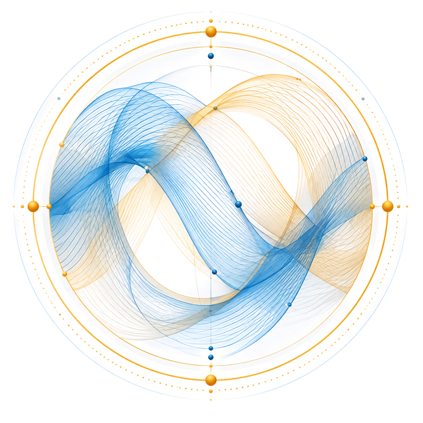

Prioritise what needs attention now
Kalicube Pro identifies the most important opportunities and gaps based on how your brand is understood across search and AI.
For companies & marketing leaders
People search your company and ask AI about it before they make important decisions.
Kalicube builds the strategy and Kalicube Pro, our digital brand intelligence platform, gives your team the data and direction to implement it, so what people and AI find reflects who your company is, what it offers and why it should be trusted.
Trusted by leading brands
The underlying issue
Your marketing, SEO, PR, content and leadership teams all contribute to how your company is understood.
But Google and AI don't see these activities as separate channels. They combine information from across your digital ecosystem, including sources your company doesn't control, to form one understanding of your business.
That changes the job of corporate brand strategy:
Corporate Digital Brand Engineering creates the strategy that brings these signals together, so your organisation is understood consistently across search and AI.
"Our company has made some significant shifts in our business over the past couple years, many of which have been influenced by opportunities uncovered by following the Kalicube process.
Specifically, to make it easier to generate helpful press mentions and other signals for LLMs, we've been working to unify our efforts around a simplified communication strategy."

What we engineer
Your executives, products, brands, content, media coverage, partners and third-party sources all contribute to how your company is understood.

Corporate Digital Brand Engineering brings these signals together so your company tells one clear, consistent and credible story across search and AI.
See how Google and AI understand your company.
Strategy from Kalicube.
Intelligence from Kalicube Pro.
Execution by your team.
Corporate Digital Brand Engineering gives your team the strategy, data and prioritised actions to build and strengthen your corporate digital brand.
Kalicube defines what needs to change. We analyse how your company is understood across its digital ecosystem, identify gaps and inconsistencies, and build the strategy to correct them.
Delivered by Kalicube
Kalicube Pro tells your team what to do next. Built on 25 billion data points and 73 million entities, it analyses your brand, competitors and audience across search, Knowledge Graphs and AI, turning that intelligence into prioritised actions for your team.
Powered by Kalicube Pro
Your team puts the strategy into action. Kalicube Pro provides prioritised tasks across SEO, content, PR, websites and brand, and your internal team implements them.
Implemented by your team
Your marketing team doesn't need more activity. It needs to know what deserves attention, why it matters and whether the work is making a difference. Corporate Digital Brand Engineering turns strategy into prioritised direction your team can execute, with the intelligence to keep that direction current.

Kalicube Pro identifies the most important opportunities and gaps based on how your brand is understood across search and AI.
Your internal team works on the prioritised actions across SEO, content, PR, websites and brand, with clear direction and context.
See whether Google and AI name your brand, how they describe it, and whether that understanding matches your strategy.
As the data changes, new opportunities and gaps emerge. Kalicube Pro updates the priorities so your team knows what to address next.
A strategy the internal team could run.
We help marketing teams turn corporate brand strategy into measurable progress in AI and search.
Merci Facteur came to Kalicube after organic traffic had fallen 37 percent year over year. Kalicube built a strategy from Kalicube Pro data around the company's digital ecosystem, audience and most effective channels. Two years later, these are the results:
Internal team implementation
Two years later, the internal marketing team was implementing the strategy autonomously, with Kalicube providing quarterly coaching.
Trusted by leading organisations
Kalicube Pro measures how your company is understood across Google and AI against the brand strategy you defined. You can see whether your company is being identified correctly, how it is described and whether it appears when people ask for relevant recommendations.
See whether your company is identified correctly, associated with the right topics, products, people and expertise, and described in a way that reflects your intended brand narrative.
Measure whether your company appears for relevant category, solution and buying questions, and how that visibility changes against the goals defined in your strategy.
Measured over time against your own strategy, not a generic visibility score.
Kalicube Pro has tracked how machines understand brands and entities since 2015. Today, its intelligence is built on 25 billion data points across 73 million entities, giving your corporate brand strategy historical context alongside a current view of your brand, market and competitors.
Kalicube Pro doesn't stop at measuring visibility.
It connects what Google and AI understand about your company to the strategy your team is implementing, identifies what deserves attention next and measures what changes as the work progresses.
Start with the free AI Audit to see how Google and AI understand your company today, where the gaps are and what to prioritise next.